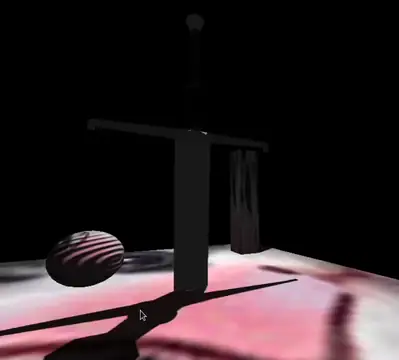

This project uses OpenTK and a few other C# libraries to implement a basic graphics engine.
It is a lucky overlap of university work and my interest in 3D graphics. A lot of it is actually quite straightforward and many aspects are less scary than they look. Most of the graphical features are done through glsl shaders. I was trying to implement most things properly, although I must confess shadows were a little rushed.
There is a release available on github for you to look at yourself.
